<!DOCTYPE html>
<html>
  <head>
    <meta name="viewport" content="width=device-width, initial-scale=1.0">
    
    <link rel="apple-touch-icon" sizes="180x180" href="/apple-touch-icon.png">
<link rel="icon" type="image/png" sizes="32x32" href="/favicon-32x32.png">
<link rel="icon" type="image/png" sizes="16x16" href="/favicon-16x16.png">
<link rel="manifest" href="/site.webmanifest"> 
    <meta charset="utf-8">
    <link rel="stylesheet"
          href="https://fonts.googleapis.com/css?family=Courgette">
    <style>
      body {font-family: 'Courgette', serif;
        font-size: 28px;}
    </style>
  </head>
  <body>
  </body>
</html>
<html>
   <head>
       <title> Elizabeth Reucassel's CV</title>
    <index class="html"> <link rel="icon" type="image/x-icon" href="/favicon.ico"></index>
       <style>
  
       body {background-color: lightcyan}
       .grid {display:grid;
                   grid-template-columns: 1fr 1fr 1fr;
                   column-gap: 10px;}
       .div1 {border: solid 2px white;
               color:white;
               background-color: lightcoral;
               padding-bottom: 400px;
               border-width: 1px;
              }
       .div2 {border: solid 2px white;
               background-color: lightcoral;
               border-width: 1px;
               padding-bottom: 100px;
               color: white;}
       .div3 {border: solid 2px white;
                color: white;
               background-color: lightcoral;
               padding-bottom: 100px;
               border-width: 1px;
            }
       .header {border:solid 5px lightcoral;
               padding-bottom: 5px;
               border-width: 10px;
               font-size:medium;
               text-align: center;
               margin-bottom: 10px;
               color: lightpink;}
              
               ul {border:none;
                display:inline-block;
                list-style:none;
                padding-left: 0;
                margin-top: 0;}
            li a {text-decoration:none;
                    background-color: lightcoral;
                    color: white;
                    display: block;
                    width: 100px;
                    padding-top: 30px;
                    padding-bottom: 30px;
                    text-align: center;
                    }
            li a:hover {
                background-color: purple;
            }
            li a.active {
                background-color: darkorchid;
            }
            li {float:left;}

            </style>
   </head>
   <body>  
    <ul>
        <ul>
            <li><a class="active" href="digitalcv.html">Home</a></li>
            <li><a href="page2.html">About</a></li>
        </ul>
    </ul>    
       <div class="header">
           <h1> My name is Elizabeth Reucassel. I am a 19 year old aspiring journalist attending Elon University!
             </h1>
             <h4> Instagram: @elizabethreucassel Twitter: @e_reucassel Cell: 912 - 689 - 6901</h4>
           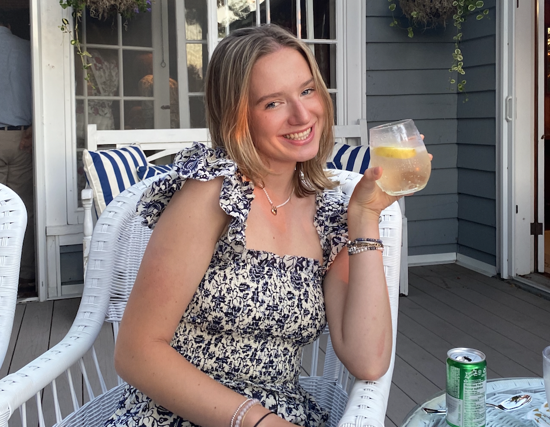
       </div>
       <div class="grid">
           <div class="div1">
           <h2> About Me:</h2>
            <h4>My favorite food is sushi, and I love going on long walks.
                I love PB & J's, and love taking my dogs for long walks.
                I'm addicted to coffee, and love my friends. 
            </h4>
            <h4> My two dogs are named Ruby and Toby. Ruby is 8 and Toby is 2.
                My go-to coffee order is an iced vanilla latte with oat milk, or
                during the fall season, a pumpkin spiced latte.
            </h4>
            <h4> I love going on long car rides and listening to my favorite music. My cousin, Alex,
                who is pictured below is like my sister and we're very close. 
            </h4>
            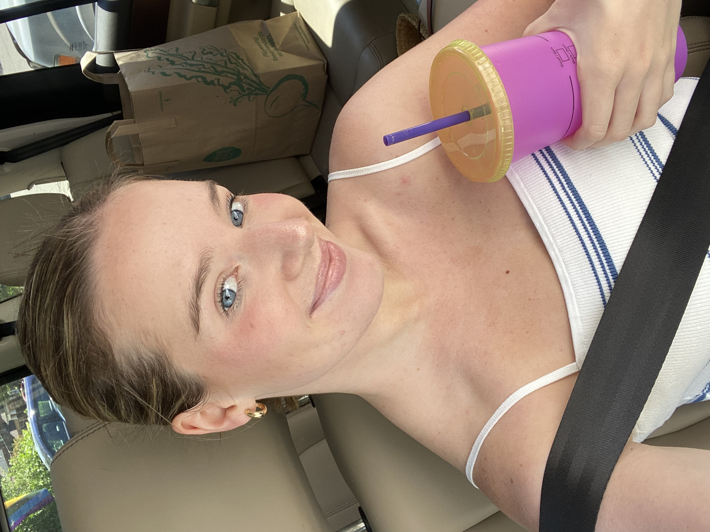
            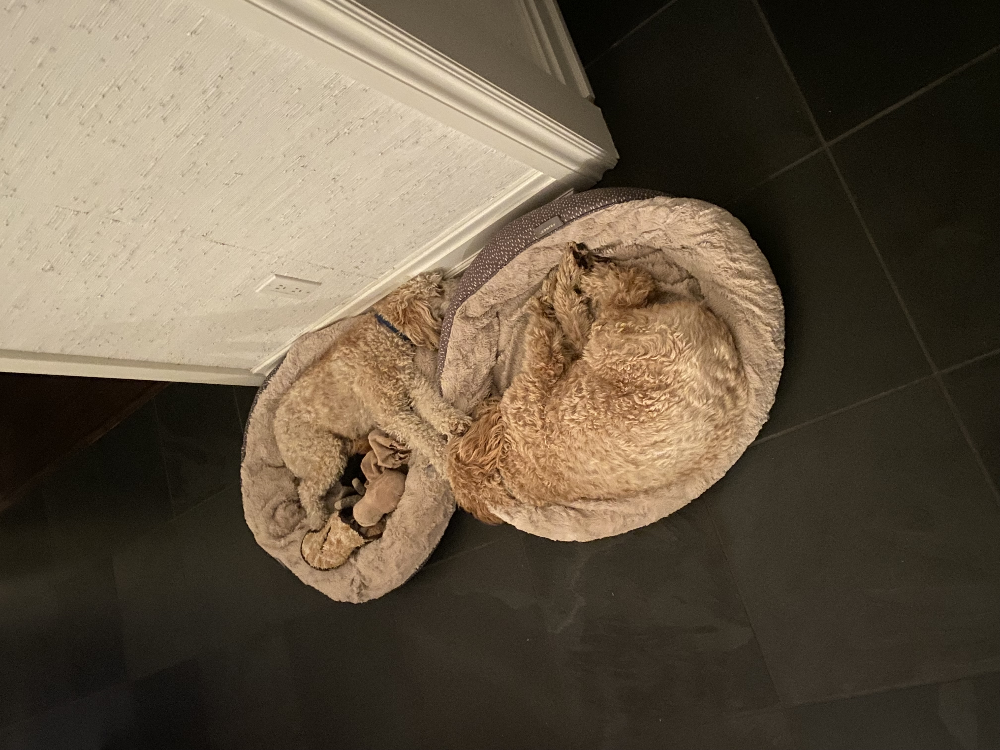
            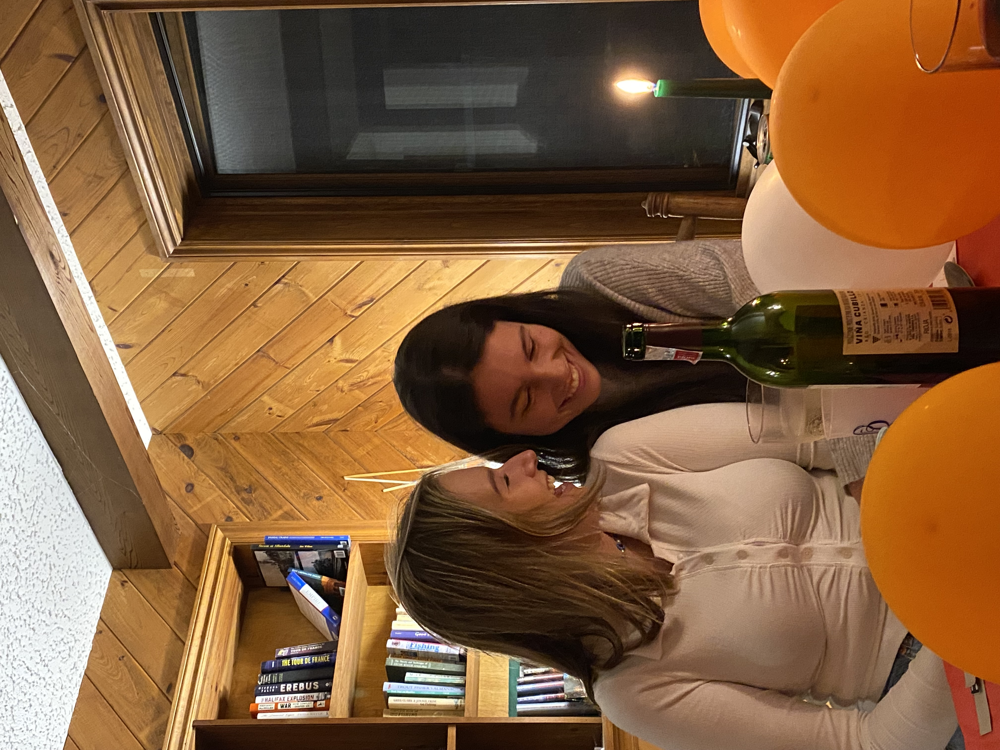
            

        </div>
        <div class="div2">
            <h2> Family:</h2>
            <h4> I have three brothers, Rives, Turner, and Parker.
                Rives is a senior in college, Turner is a junior in high school,
                and Parker is in the 8th grade. 
            </h4>
            <h4> I love having brothers. I'm so lucky to have three people who will
                always have my back no matter what. My brothers and I love going golfing together, 
                swimming in the ocean, and also just hanging out and relaxing. 
            </h4>
            <h4> Being the only girl can be difficult sometimes, especially because my brothers are so sporty.
                However, I wouldn't want it any other way and I'm so thankful for them!
            </h4>
            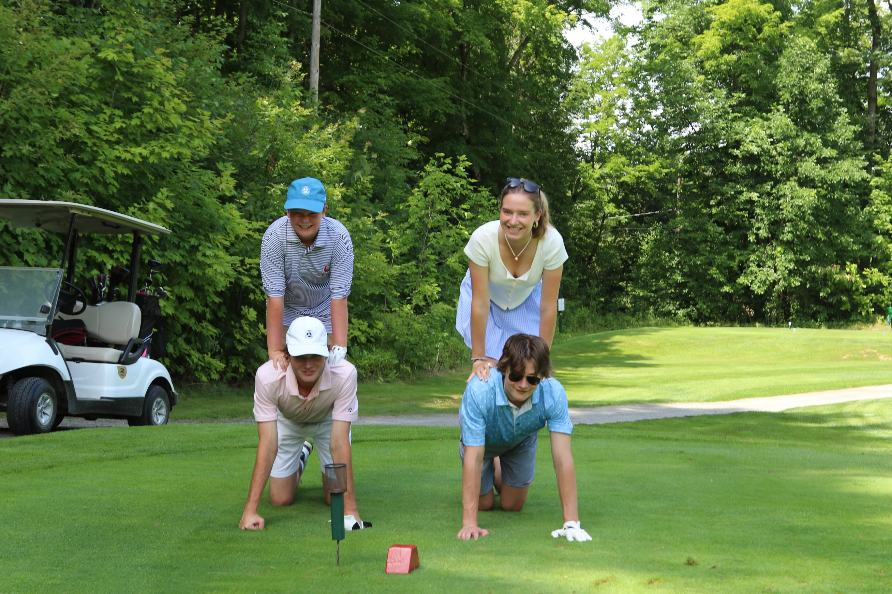
            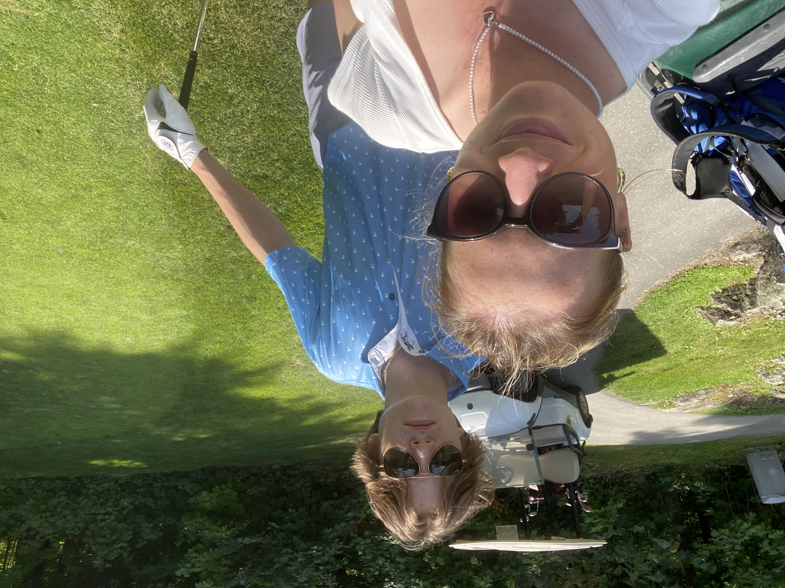
            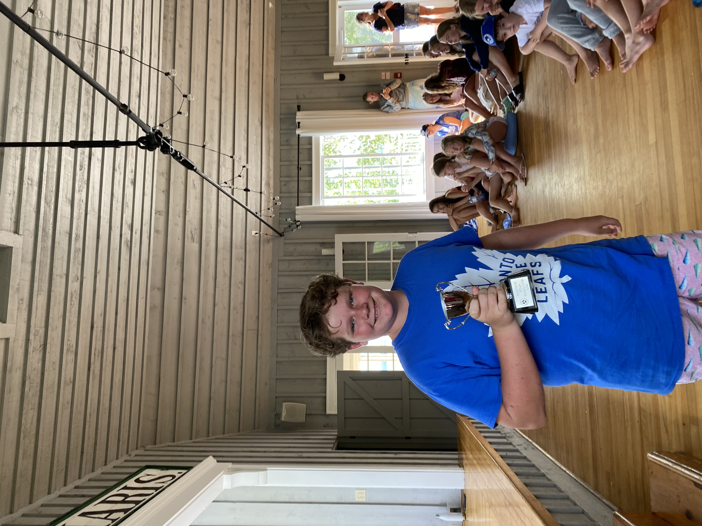
            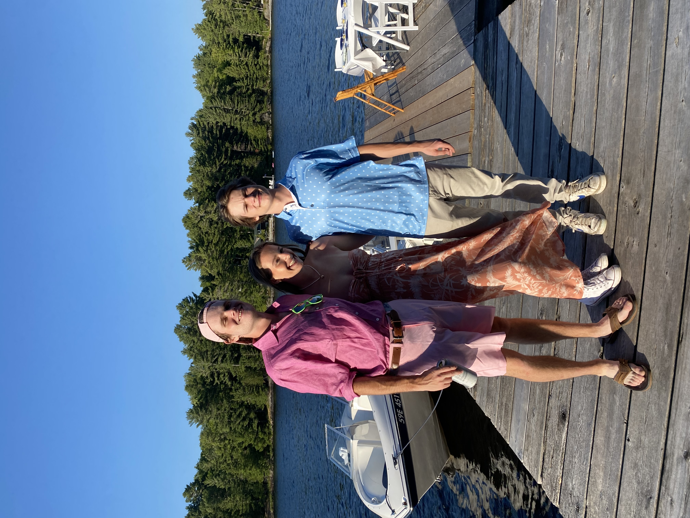
        </div>
        <div class="div3">
            <h2> My Goals:</h2>
            <h4> My dream job is to work for Vogue Magazine in New York City.
                I want to be a fashion journalist, and be able to comment on designer pieces.
                I hope to have a big family one day with lots of kids, and live near the beach.
                I also hope to do lots of travelling to Europe, Africa, and Australlia. 
            </h4>
            <h4> Working for Vogue is my dream job because it's such an established magazine, 
                with so much outreach to do good. I'm so excited to be able to travel for work
            and watch all different sorts of fashion shows and be able to write about all the beauty of it.
        </h4>
        <h4> Living in New York City is the absolute dream. It's such a perfect city for my line of work.
            Everytime I visit the city I fall completely in love with the energy and all the experiences I'm able to have.
            Live, Love, NYC!
        </h4>
            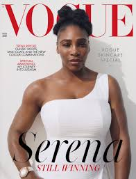
            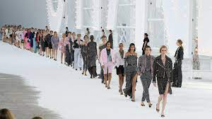
            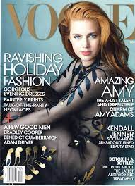
            
        </div>
 

 
      